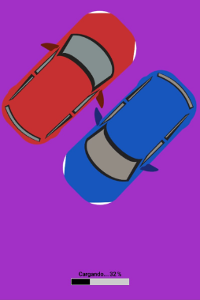

Game Design Document: Projecte Final
Pots visualitzar el document PDF en el següent enllaç:
Game Design Document de Ismael Iván A. B.
CONTINGUT DEL JOC
Nivells
El joc es desenvolupa en un únic "mapa", que consisteix en un senzill carrer, amb tres opcions de menú: Sortir, Reiniciar i Següent Nivell, que apareixen al superar cada nivell.
Personatges
Considerant els "personatges", trobem dos vehicles: un de color vermell i un altre de color blau. El vehicle controlat pel jugador es distingeix pel seu color vermell, mentre que el bot és representat pel vehicle blau.
NPCs
Com s'ha esmentat anteriorment, el personatge no jugable (NPC) és el vehicle blau, que incrementa la seva velocitat amb cada nivell superat.
Sons i música
Encara que el joc careix principalment de música, presenta dos tipus de sons: el de victòria i el de derrota.
INTERFÍCIE D’USUARI
Pantalla de carrega
El joc consta de quatre pantalles senzilles, sent la primera una pantalla de càrrega que mostra el logotip del joc i una barra de progrés que indica l'avanç.
Menú principal
És fonamental comptar amb un menú principal que inclogui opcions bàsiques, com accedir a la configuració, començar el joc i sortir del mateix.
Pantalla d’ajustaments
Des del menú principal, es pot accedir a la pantalla de configuració, que ofereix una opció senzilla, com activar o desactivar el so del joc.

Pantalla de joc
La pantalla de joc és la més rellevant, ja que en ella es mostra la base del joc i s'inclou un comptador de nivells, això ajuda a indicar també quan el bot augmentarà la seva velocitat.
TEMA
Temàtica del videojoc
El joc es situa en carreres, on el jugador competeix amb un altre vehicle per determinar qui és més ràpid, requerint una ràpida pulsació a la pantalla per superar l’altre vehicle.
DESCRIPCIÓ DEL JOC
Plataformes
Dissenyat per a dispositius mòbils amb sistema operatiu Android.
Objectiu públic
Aquest joc de carreres està pensat per a tots els públics i és ideal per passar el temps lliure.
LES 3C’S
Caràcter
En aquest joc és una cosa básica, tindre diferents colors, o qualsevol cosa per diferenciar-se entre ser el jugador principal, o l’NPC en els cotxes per poder distinguir qui personatge ets a l’hora de jugar, i contra qui has de competir.
Càmera
La càmera en aquest joc adopta una vista fixa, similar a l'observació d'una carrera des d'un punt de vista elevat, com si fos des d'un dron. Aquesta perspectiva proporciona una visió panoràmica de l'entorn de la pista, permetent als jugadors poder veure millor la carretera, i la línia de meta.
Control
Els controls són senzills, ja que es tracta d'un joc mòbil per a Android que es juga únicament mitjançant la pantalla tàctil.
DISSENY DEL HUD
Análisis del HUD
El joc presenta un HUD senzill i estàtic durant la partida, ocupant poc espai a la pantalla. Aquest HUD està dissenyat per proporcionar informació essencial al jugador sense interrompre la seva experiència visual. A la part superior de la pantalla es mostren elements com la distància recorreguda i la línia de meta, permetent als jugadors conèixer la seva posició i progressió a la carrera.
Els botons de control es col·loquen de manera estratègica a la part superior de la pantalla, fora de la línia de visió principal del jugador. Això assegura que l'espai de la pantalla estigui completament lliure perquè els jugadors puguin centrar-se en la jugabilitat sense interferir en la seva visió del joc.
PREMIANT AL JUGADOR
Punts de reaparició
El principal punt de reaparició en el joc és al principi de la partida. Quan es perd, el jugador torna a començar des del principi i el comptador de nivells es reinicia a zero. Això significa que s'ha de tornar a acumular nivells des del principi.
High Score
Encara que no hi ha monedes, punts o elogis en aquest joc, els nivells actuen com a indicador de progrés i habilitat. A mida que el jugador avança a través dels nivells, es pot considerar més ràpid i experimentat. D'aquesta manera, el progrés en els nivells serveix com a mesura del rendiment i l'èxit del jugador, tot i que no es reflecteixi en una puntuació específica o un rècord personal.
MULTIPLAYER
Nº de Jugadors
Aquest joc és dissenyat per a una experiència d'un sol jugador, en un format 1 vs 1, on el jugador enfronta al bot.
Tipus de connexió
El joc opera de manera independent sense necessitat de connexió a internet, essent totalment offline. Això significa que els jugadors poden gaudir de la seva experiència de joc sense dependre de cap connexió externa, ja que estan competint exclusivament contra el bot i no requereixen d'una connexió a la xarxa. Això proporciona flexibilitat i accessibilitat per jugar en qualsevol moment i en qualsevol lloc sense restriccions de connectivitat.
STORYBOARD I CINEMÀTIQUES
Storyboard i cinemàtiques del joc
La cinemàtica d'aquest joc és senzilla i pot semblar repetitiva perquè es desenvolupa en un escenari estàtic. No obstant això, aquesta simplicitat s'entén perquè l'escenari és constant i l'únic canvi significatiu és la velocitat del cotxe blau, que actua com a principal desafiament per al jugador. Quan el cotxe vermell (controlat pel jugador principal) perd, es reinicia el joc pràcticament des del principi, donant lloc a un cicle de joc simple i directe, però que pot generar un repte progressiu a mesura que el bot millora la seva velocitat.
MODEL MDA
Mecànica
La mecànica principal pot consistir a utilitzar la pantalla tàctil per interactuar amb el joc. L'objectiu sempre serà vèncer al vehicle blau i ser el més ràpid.
Dinàmica
La dinàmica del joc es centra en la competició entre el jugador (controlant el cotxe vermell) i el vehicle blau (controlat per l'ordinador). A mesura que avança el joc, la velocitat del vehicle blau augmenta, augmentant així la dificultat i el repte per al jugador. La dinàmica de la carrera es simplement, superar a l’altre vehicle, que serà el “competidor”.
Estètica
L'estètica del joc és senzilla i fàcil de comprendre. El disseny de la pista de carreres és consistent a través dels diferents nivells, amb canvis mínims en l'entorn visual. Tot i això, els detalls com els colors dels vehicles i els elements del HUD proporcionen una estètica simple, coherent i fácil d’entendre per totes les edats.
ELEMENTS DEL VIDEOJOC
Metes (Objectius)
La principal meta del joc és arribar al final de la carretera, on es troba la bandera, mentre més gran sigui la diferència de rang entre el cotxe vermell i el blau, més fàcil serà guanyar. Això significa que el jugador ha de mantenir una distància significativa entre els dos vehicles per assolir la victòria.
Corba d’interès
La corba d'interès del joc pot variar segons l'emoció i la competència del jugador. A mesura que la competició s'intensifica i la distància entre els dos cotxes es redueix, l'interès i l'excitació del jugador augmenten. Aquesta corba d'interès reflecteix l'augment de la tensió. Un exemple gràfic pot ser el següent:
Nivell (Grau de dificultat)
A mesura que el jugador avança de nivell, la dificultat del joc augmenta de manera exponencial. El bot incrementa la seva velocitat progressivament, com si fos una gràfica de potències en matemàtiques, augmentant el repte i l'exigència per al jugador. Aquesta progressió gradual de la dificultat manté el joc “desafiant”.
Torna-ho a intentar
Un altre element clau és la possibilitat de tornar a intentar la partida. Després de perdre, l'única opció per al jugador és reiniciar la carrera i intentar superar els desafiaments de nou.